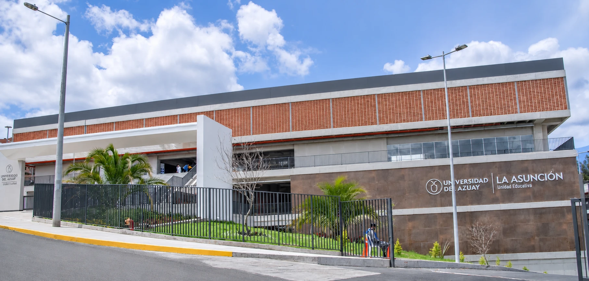

Seis mocktails sin alcohol y la opción de crear tu propia combinación.

☼ EMPRENDIMIENTO ESTUDIANTIL
SUNSET MOCKTAILS
Sabor, frescura y buena vibra.
Mocktails tropicales con los colores del atardecer, creados por estudiantes para la Feria de Emprendimiento del colegio. Ven a nuestro stand, elige tu combinación y brinda por los buenos momentos.
 01 / UNA IDEA DIFERENTE
01 / UNA IDEA DIFERENTEINNOVACIÓN
Una nueva forma
de disfrutar.
Nuestra innovación es el mocktail personalizable. A diferencia de los puestos de jugos y bebidas, donde se elige una bebida ya armada, en Sunset Mocktails cada cliente crea la suya: escoge una fruta tropical (maracuyá, mango, piña o fresa), un complemento (coco, jamaica, toronja o limón), un toque especial (menta, hierbabuena o jengibre) y el tamaño.
Además, en esta página, la herramienta «Crea tu Sunset» muestra al instante cómo se vería tu bebida y cuánto costaría. Así llegas a nuestro stand de la feria sabiendo qué pedir, y nosotros unimos sabores tropicales, presentación de cóctel y cero alcohol en un solo vaso.
Crea tu combinación ↗TU IMAGINACIÓN, TU MEZCLA
Crea tu Sunset.
Arma tu mocktail antes de llegar a la feria: elige los ingredientes, mira el precio y pídelo tal cual en nuestro stand.
TU CREACIÓN
VISUALIZACIÓN ORIENTATIVA
Precio
Precio base: $3,00; presentación de 12 oz +$0,40; coco +$0,20; jengibre +$0,10. Las demás opciones no añaden costo.
UN SABOR PARA CADA MOMENTO
Nuestros mocktails.
Frutales, cítricos o con burbujas: estas son las seis propuestas que llevaremos a la feria. Toca cada tarjeta para conocer sus ingredientes y detalles.
NUESTRA HISTORIA
Un atardecer
convertido en sabor.
Sunset Mocktails es un emprendimiento estudiantil que nace de una idea: crear bebidas especiales para disfrutar sin alcohol.
Pensamos en una marca inspirada en los colores del atardecer y en frutas como el maracuyá, la piña y el mango.
De esa mezcla salieron bebidas de colores vivos, nombres propios y presentaciones pensadas para compartir.
Ahora la llevamos a la Feria de Emprendimiento del colegio para que descubras sabores nuevos y brindes por los buenos momentos.
☼
Que nunca falten
los buenos momentos.
NUESTRA MARCA
El logotipo de Sunset Mocktails
- Ícono: un sol de atardecer sobre el mar y una flor de hibisco, que unen lo tropical con el momento del día que inspira la marca.
- Nombre: «SUNSET» en letras espaciadas y «MOCKTAILS» en una tipografía con serifa, grande y fácil de leer.
- Eslogan: «Sabor, frescura y buena vibra», en letra manuscrita.
- Colores: durazno, coral y rosa, los tonos del atardecer que se repiten en toda la página.
01 / MISIÓN
Crear experiencias refrescantes mediante mocktails sin alcohol, combinando sabores tropicales, creatividad y presentaciones originales en ferias y eventos.
02 / VISIÓN
Ser uno de los emprendimientos más recordados de la feria y crecer como una marca de experiencias tropicales creativas y accesibles.
03 / VALORES
Creatividad · Frescura · Calidad · Alegría · Responsabilidad
DINERO SEGURO
Precios claros,
decisiones tranquilas.
Antes de llegar a la feria puedes revisar los ingredientes, el tamaño y el precio de cada bebida. Así comparas las opciones con calma, sabes cuánto vas a pagar y llegas a nuestro stand con tu pedido decidido.
✓ Precios a la vista
✓ Ingredientes y tamaños de cada propuesta
✓ Pagas solo en nuestro stand, al recibir tu bebida
La página no recibe pagos ni pedidos: todo se paga directamente en la feria.
VARIABLES DEL MERCADO
Conoce nuestro mercado.
Oferta, demanda, precio, competencia, público, distribución, promoción y diferenciación: las variables que definen cómo llevamos Sunset Mocktails a la Feria de Emprendimiento.
Visitantes de la feria que buscan una bebida refrescante y diferente, sin alcohol.
Entre $3,00 y $4,00, con el precio de cada combinación visible antes de comprar.
Otros puestos de bebidas y snacks de la feria, además de juguerías y cafeterías.
Estudiantes, docentes, familias e invitados que buscan alternativas sin alcohol.
Venta directa en nuestro stand de la feria; más adelante, eventos y pedidos.
Fotos y videos en redes antes de la feria, esta página y la recomendación de quienes nos visiten.
Personalización, identidad tropical y experiencia de marca en cada vaso.
FERIA DE EMPRENDIMIENTO
Nos vemos
en la feria.
Sunset Mocktails participará en la Feria de Emprendimiento de la Unidad Educativa La Asunción. Muy pronto anunciaremos la fecha, el horario y el lugar de nuestro stand.
Arma tu mocktail antes de ir ↗- Fecha
- Por anunciar
- Horario
- Por anunciar
- Stand
- Por anunciar
EN NUESTRO STAND
- Los seis mocktails del catálogo
- Tu propia combinación de «Crea tu Sunset»
- Precios a la vista antes de pagar
HABLEMOS DE SABORES
¿Listo para tu
próximo atardecer?
¿Qué combinación te gustaría encontrar en nuestro stand? Cuéntanos tu idea o escríbenos tus preguntas sobre la feria.

INSTITUCIÓN EDUCATIVA
Unidad Educativa Particular La Asunción
Campus Bicentenario UDA-Baños
Río Orinoco y Av. Ricardo Durán
Cuenca, Ecuador